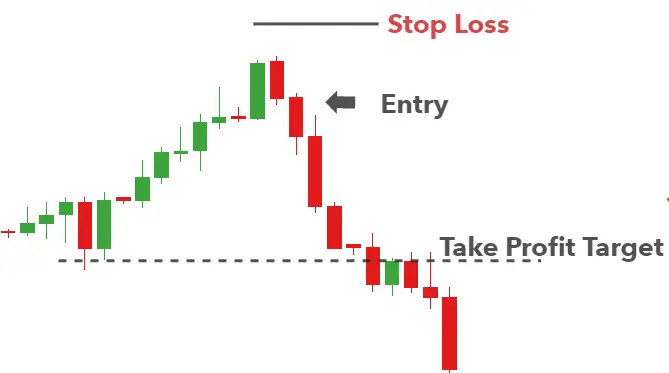

The Dark Cloud Cover pattern is a candlestick pattern that signals a potential reversal to the downside. It appears at the top of an uptrend and involves a large green (bullish) candle, followed by a red (bearish) candle that creates a new high before closing lower than the midway point of the previous green candle.

This candle formation, although very similar, should not be confused with the Bearish Engulfing candle pattern. Both patterns signal a potential trend reversal but the Dark Cloud Cover offers more attractive entry levels due to a higher close of the bearish candle than that observed with the bearish engulfing candle pattern.
| HOW TO IDENTIFY A DARK CLOUD ON FOREX CHARTS |
Dark Cloud Cover checklist:
| HOW TO TRADE USING THE DARK CLOUD PATTERN |
Traders can look to trade more traditional trending markets such as the GBP/USD or EUR/USD, but can also incorporate Dark Cloud Cover technical analysis in ranging markets.
Trending markets
Below is an example of the Dark Cloud Cover pattern in forex, specifically, the GBP/USD forex pair. Refer to the chart for more information.
This Dark Cloud Cover checklist can be used to analyze a potential trade:

Entry levels, targets and stops can be easily identified when taking a look at the zoomed in chart below. The entry can be placed at the open of the next candle, after the Dark Cloud Cover pattern has formed.

Stops can be placed above the recent swing high and the initial target level can be set at key levels or recent areas of support/resistance. It is worth noting that because the trade is potentially the starting point of an extended move down, traders can set multiple target levels.